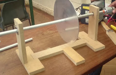

I made a chatbot that can ask you questions about your favourite movie genres and scores.
The program also has the ability to store and read the values in a text based file.
Magnetic braking system

Researched and created a braking system using Eddy currents and Lenz's law.
Worked in a team of 4 to complete the project within the 2 week deadline.
Bicycles were the practical application for the technology.
Constructed and tested a prototype system, which constituted of a metal wheel connected to a motor controlled by batteries of different voltages, and magnets to stop the rotation.
Results concluded that magnetic braking was quicker and more efficient than friction based braking.
Presented our concept to a panel of judges and received high commendation.